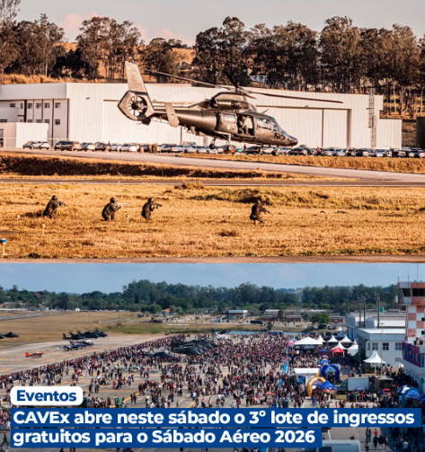

Quem ainda não conseguiu garantir presença no Sábado Aéreo 2026 terá uma nova oportunidade neste sábado (8). O Comando de Aviação do Exército (CAVEx) abrirá o 3º lote de ingressos gratuitos a partir das 12h, por meio do link disponível na bio do perfil oficial do CAVEx no Instagram.
Cada pessoa poderá retirar até cinco ingressos em seu próprio nome, permitindo presentear amigos e familiares. Não é necessário apresentar o ingresso impresso: basta validar o QR Code, em formato digital ou impresso, na entrada do evento.
Marcado para o dia 29 de agosto, em Taubaté, o Sábado Aéreo é um dos maiores eventos do setor na região e reúne apresentações de helicópteros e aeronaves, demonstrações militares, salto de paraquedistas, exposição de equipamentos, praça de alimentação e atrações para toda a família.
A edição de 2026 também celebra os 40 anos da Aviação do Exército e o Dia do Soldado, prometendo uma programação especial para o público.
Vai ao Sábado Aéreo? Confira nossa linha de calçados, mochilas e acessórios táticos pra curtir o evento com o equipamento certo.